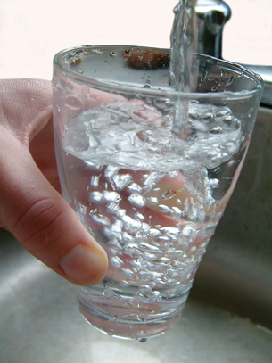

Module 4—Properties of Solutions
 Reflect and Connect
Reflect and Connect
One of the more interesting field trips you may be able to do is to visit the water treatment facility in your local area. If you are unable to visit a facility directly, you may wish to view the video below.
 Watch and Listen
Watch and Listen
You may wish to take a virtual tour of the City of Saskatoon's water treatment plant. You can find this virtual tour on the Internet using the combined search terms “Saskatoon,” “water treatment,” and “events.”
Reflect on the Big Picture

© Muriel Lasure/shutterstock
You may want to view this additional information about the government’s role in ensuring water quality.
 Module 4: Lesson 4 Assignment
Module 4: Lesson 4 Assignment
To complete your assignment as an online quiz, click on Module 4 Lesson 4 Assignment in the "Quizzes".
To complete your assignment as an MSWord document, click Module 4 Assignment 4.